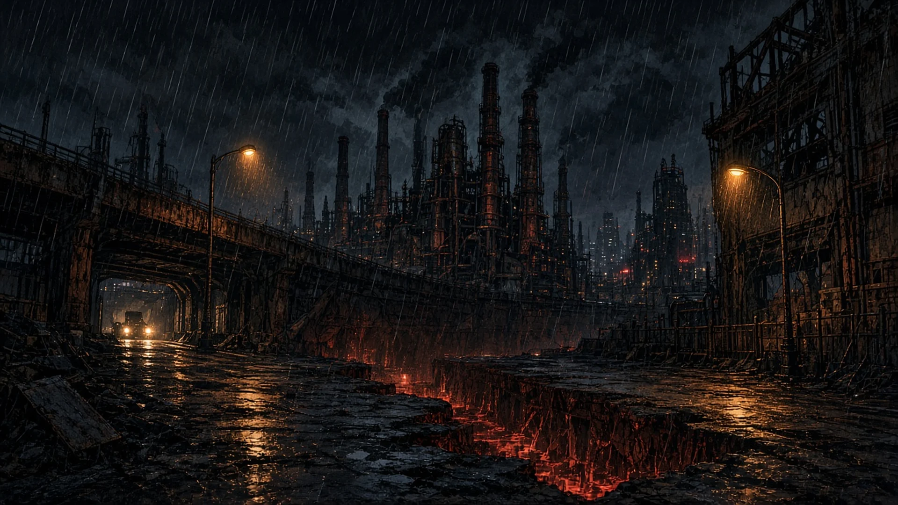
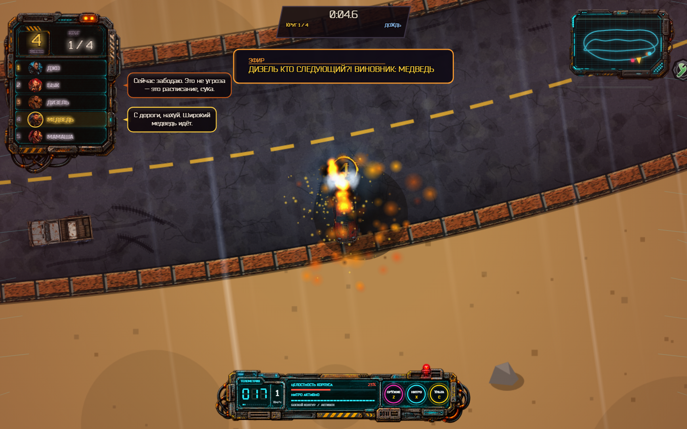
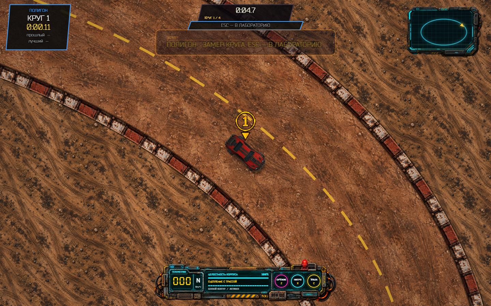
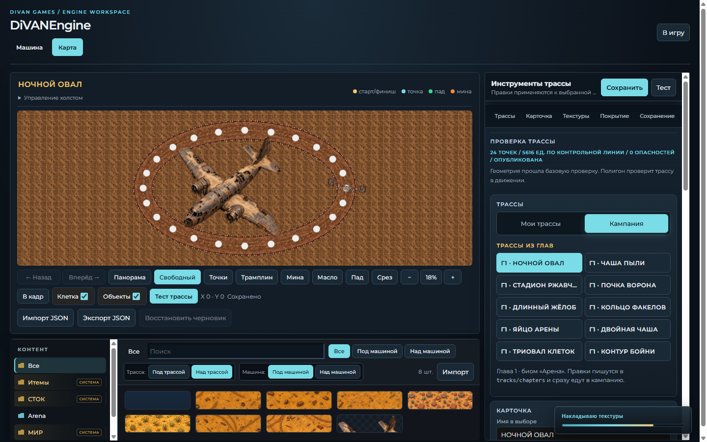

Divan Games · Windows · 21+
Смертельная гонка,
где финиш — это ещё дышать.
Чёрный Пояс притворяется мёртвым. Под асфальтом гудит арена. Пушки на капоте, хлам вместо кузова, семья на стартовой решётке. Приз — отговорка. Нужен сервер.
Пролог
Город, который не спит.
Он притворяется мёртвым.

Кампания
Не пилоты. Семья, которую арена собрала в одну мясорубку.
Боевой контур
Это не симрейс.
Это родео с пушками.
-
01
Ствол · нитро · ульта
Z — оружие, X — нитро или прыжок, C — ульта. У каждого стока свой кит: таран, купол, мины, ненависть.
-
02
Карьера на годы
Пять единиц хлама с порога. V8 не купить за вечер. Ставки с кассы, серия побед, реванш, который не двигает календарь.
-
03
Гараж и оружейка
Броня слоями, подвеска, шины, ствол и ульта выбранной машины. Машина — персонаж, не скин.
-
04
DiVANEngine
Свой кузов и петля: сплайн, полотно, борта, мины, трамплины. У каждого биома три развязки. Ctrl+S пишет на диск.
-
05
Погода как оружие
Дождь, снег, песчаная буря, извержение. Из-под колёс — брызги и снег. Молния бьёт по холсту.
-
06
Комикс, не катсцена
Семь кадров пролога и интро каждого гонщика. Сюжет важнее экшена: кто послал отряд в ловушку.
Эфир
Вид сверху. Кровь и телеметрия в одном кадре.

Соперники, дождь, огонь и повреждённый корпус. На экране — место, круг и состояние машины.

Земляная дорога и новые борта арены. Внизу — скорость, корпус, нитро и ульта.

Кампанийные трассы, полотно и ассеты в одном окне. Тест запускается прямо из редактора.
Статус билда
Что уже в арене — и что ещё ревёт за воротами.
Журнал
Кампания и редактор стали удобнее
В игре 0.2.2.16 пролог начинается после выбора новой кампании, а комикс Медведя — после подтверждения машины. В тренажёрке пилоты прокачивают доход от гонок и подбора денег. В DiVANEngine сюжетные карты отделены от пользовательских, а дорогу, борта и ассеты можно заменять без потери качества. Лаунчер для первой установки — MSI 0.2.2.11.
- Пролог и комикс запускаются в нужный момент новой кампании.
- Прокачка «Доход» повышает выплаты и сбор денег на трассе.
- Арена главы 1: десять редактируемых петель из tracks/chapters.
- Лаборатория: замена дороги и бортов, импорт ассетов, независимые слои трассы и машины.
Уже в клиенте
- Карьера: гараж → тренажёрка → ставка → гонка → награды
- Реванш и выбор уже проеханной трассы после пяти побед
- Призы 1–3, серия ×3 / ×5 / ×8, объяснение разблокировок
- Пятнадцать петель: три развязки на пустыню, сад, каньон, лёд, вулкан
- Погода и эмбиент биома: дождь, гром, снег, буря, извержение
- DiVANEngine: карты кампании, замена дороги и бортов, импорт ассетов, отдельные слои трассы и машины
- Стартовый хлам, средний класс, оружейка ствола и ульты
- Прокачка дохода для каждого пилота в тренажёрке
- Глава Медведя до «Живых на табло»: ограбление, кузнец, Дьявол, модуль Башкиру, арена. Скарабея нет
- Титул: Titles, кампания и свободный заезд, ESC на рабочий стол
- Трибуна на любой петле; дождь меню не течёт в гараж; мотор громче атмосферы
- Windows, MSI-лаунчер 0.2.2.13, игра 0.2.2.16, офлайн, без аккаунта
Следующая версия
Главы 9–13 Медведя: правда в тоннеле, боссы прошлого, Лаурят, семейный турнир, последний круг. Чемпионат с общим зачётом. Мятость остальных кузовов. Ночь, завод, болото — не ещё один овал.
Гонка не один формат
Битва насмерть на арене. Тайм-атака с призраком. Выживание. Кубок из трёх гонок. Второй игрок на одной клавиатуре.
Лица, голос, косметика
Скины и винилы. Характеры ИИ. Реплики в гонке. Босс дивизиона. Диктор — голосом, не только текстом.
Steam и хвосты
Депо Steam. Подпись кода. Экспорт сейва. Реплей круга. Динамическая музыка на нитро. Голоса поверх пустых MP3.
TODO
Что ещё проверить руками
Оперативный список, не бэклог мечты. Сначала прохождение и слух, потом косметика и магазин витрин.
Полный TODO.md → Полный ROADMAP.md →-
Слух
Голоса пилотов и диктора поверх пустых слотов. Живой прогон микса: мотор, дождь, трибуна.
-
Заезд
Погода читается, капли не на камере. Оружейка: магазин и перегрев Жеребца, ульты на трассе.
-
Лаборатория
Проверить слои ассетов под/над трассой и под/над машиной на новой и выделенной декорации. Тест карты возвращает тот же слот.
-
Выкладка
Пейдж, MSI 0.2.2.11 и игра 0.2.2.16 опубликованы. Главы 9–13, Steam-депо и OV/EV подпись — отдельно.
Приглашение было коротким
Участие добровольное.
Как прыжок, когда пол уже ушёл.
Скачай MSI лаунчера с GitHub. Игру клиент подтянет сам. Офлайн, без аккаунта, без вкладки браузера.
- Windows desktop
- Офлайн, без аккаунта
- WASD · Пробел · Z / X / C
- Рейтинг 21+